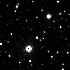

Learn the sky
Three things to look for in a telescope image.
What are spiral arms?
They’re winding lanes of stars, gas, and dust. Look for pink patches along M51’s arms where young stars light up clouds of hydrogen.
Where are stars born?
Stars form when dense pockets inside clouds of gas and dust collapse under gravity. The Orion Nebula gives us a close look at a region full of young stars.
Why observe in infrared?
Near-infrared light can travel through some of the dust that blocks visible light. Astronomers combine both kinds of observations to study what the dust hides.
Reading starlight


One galaxy.
Two views.
On the left, visible light shows the Whirlpool’s bright stars. On the right, a map made from visible and near-infrared observations reveals dust lanes that starlight can obscure.
Read the Hubble studyOpen a real FITS image
Three steps with a real SPHEREx observation. No archive access is needed.
A FITS file keeps image data and header information together, in sections called Header Data Units (HDUs). In this example the Primary HDU is empty, and the IMAGE HDU holds the pixel array along with the header cards that describe it.
-
Open FITS Viewer and load the example
Open FITS Viewer and press Load SPHEREx example. The status line reads “SPHEREx QR2 example loaded.” and a grayscale star field appears under Image preview.
-
Select the IMAGE HDU
In File metadata, the Header Data Unit menu lists “0 · Primary” and “1 · IMAGE”. Keep “1 · IMAGE”, which the Viewer selects for you. Axis sizes reads 70 × 70, and the caption under the image reads “70 × 70 pixels”. The Primary HDU has no pixels, so it shows no image.
-
Read OBSID, BUNIT, and DATE-OBS
In the same panel, Observation shows the
OBSIDvalue 2025W21_2C_0280_1 and Units shows theBUNITvalue MJy / sr. Open FITS header cards and scroll toDATE-OBS, which reads 2025-05-24T04:24:53.232.

OBSID- The observation this image comes from.
DATE-OBS- When the observation was made, in UTC.
BUNIT- The unit of each pixel value.
MJy / sris megajanskys per steradian, a surface brightness.
The gray levels in the Viewer are a display stretch chosen to show contrast. They are not measurements. To measure flux, use the calibrated pixel values stored in the file, in the unit given by BUNIT. FITS standard
Start from an archive observation
This page cannot read the IRSA archive directly, so Observation Search hands the result over as a CSV file you save and import.
- In Observation Search, press Use SPHEREx example, then Prepare search.
- Select Open IRSA results (CSV) and save the file the archive returns.
- Under Import IRSA CSV, use Choose the saved CSV file and pick that file. Open one of the observation rows.
- Press Download FITS cutout to save a small FITS file, then Open in FITS Viewer.
- In the Selected observation panel, use Choose a local FITS file and pick the file you saved. The Viewer compares the header
OBSIDwith the row you selected and tells you whether they match.